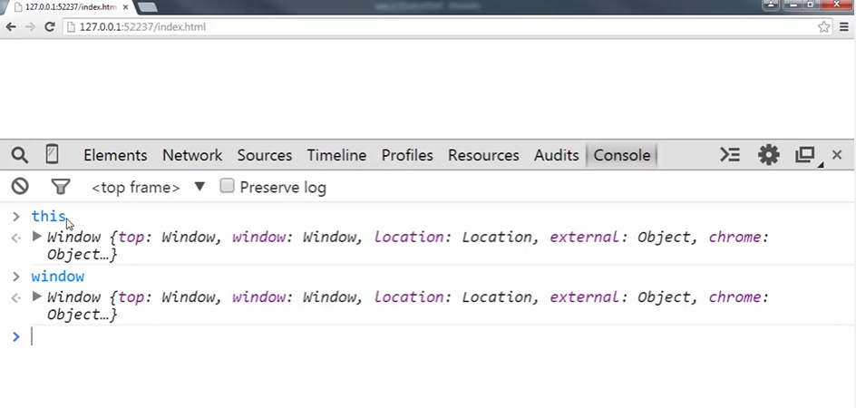

在 JS 中，無論你寫的程式碼在何時、何處執行，都會被包在一個 JS 為你準備的執行環境之中，稱之為’全域環境’，全域顧名思義就是在任何區域都可以被取得，在其內所建立的物件也稱之為’全域物件’。
何未全域
在開發前端網頁時，我們基本會有一個 html 檔案，並載入如 app.js 的 JS 程式碼如下:
1 | <html> |
在瀏覽器內打開這個檔案會發現，即使在 app.js 中沒有寫任何的內容也會在全域環境中看到以下兩項是 JS 幫你建立好的
變數 this
this 是 JS 執行環境自動幫你產生的全域變數，開啟瀏覽器 console 即可查看其內容

Global Object
- window
打開瀏覽器，在 console 內輸入 this 並點選打開內層，就會發現裡面有一個 window 的全域物件，其所代表的就是瀏覽器這個畫面本身，所以在後端 node.js 中輸入 this 就不會是 window 這個全域物件，但仍會有一個 JS 幫你產生的全域物件，因為 JS 執行環境已被產生
- window
建立變數
接下來我們在 app.js 內寫一點程式碼如下:
1 | // app.js |
接著打開瀏覽器 console 可以透過輸入以下兩種方式找到我們宣告的變數
- a
- window.a
結論
只要不是在函式內宣告的變數就是全域變數